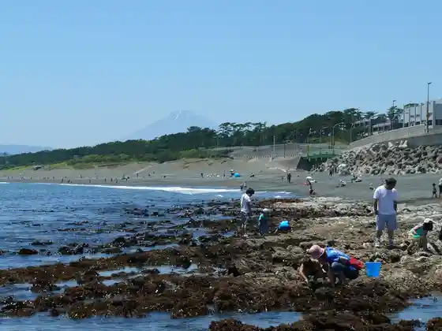
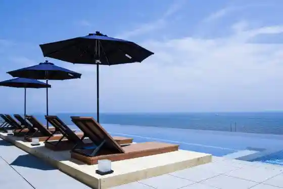
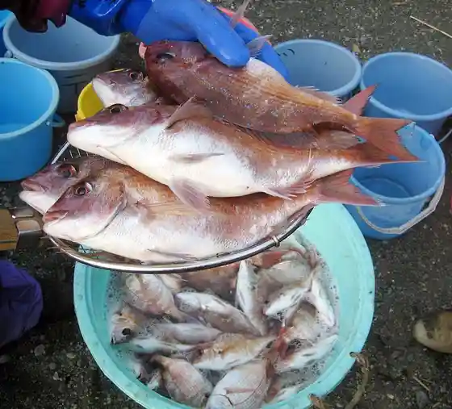

Shogasaki Coast
Oiso, Kanagawa · 0463-61-4100 · Official / source link

THERMAL SPA S.WAVE
Oiso, Kanagawa · 0463-61-8381 · Official / source link

Oiso Rongu Beach
Oiso, Kanagawa · 0463-61-7726 · Official / source link

Oiso Shiroyama Park
Oiso, Kanagawa · 0463-61-0355 · Official / source link
Oiso Jibiki Ami Experience
Oiso, Kanagawa · Official / source link

Chaya Town Kafe
Oiso, Kanagawa · 090-3801-5455 · Official / source link
Hijikatakankitsuen (Mikan Kari)
Oiso, Kanagawa · 0463-72-0238 · Official / source link
Kyu Yoshida Shigeru Tei
Oiso, Kanagawa · 0463-61-4700 · Official / source link
Koyurugi no Hama
Oiso, Kanagawa · Official / source link
Kokudo 134 Go
Oiso, Kanagawa · Official / source link
Oiso Beach
Oiso, Kanagawa · 0463-61-4100 · Official / source link
Oiso Geihinkan (Kyu Kinoshita Tei Bettei)
Oiso, Kanagawa · 050-3385-0013 · Official / source link
Oiso Minato Dezain Lighthouse Aobato Kansatsu
Oiso, Kanagawa · Official / source link
Meiji Kinen Oiso Tei Sono
Oiso, Kanagawa · 0463-61-0101 · Official / source link
Oiso Shi
Oiso, Kanagawa · 0463-61-0871 · Official / source link
Shigi Ritsu Iori
Oiso, Kanagawa · 0463-61-6926 · Official / source link
Chi Fuku Tera
Oiso, Kanagawa · 0463-61-4100 · Official / source link
Shigi Ritsu Iori
Oiso, Kanagawa · 0463-61-6926 · Official / source link
Kyutokaido Matsunami Ki (Oiso)
Oiso, Kanagawa · 0463-61-3300 · Official / source link
Yo Tani Tera Yokoana Haka
Oiso, Kanagawa · Official / source link
Kyu Shimazaki Fuji Village Tei
Oiso, Kanagawa · 0463-61-3300 · Official / source link
Kesho Ido
Oiso, Kanagawa · Official / source link
Kyu Mitsui Bettei Chiku
Oiso, Kanagawa · 0463-61-0355 · Official / source link
Sawada Miki Memorial Museum (Kakure Kirishitan Museum)
Oiso, Kanagawa · 0463-61-4888 · Official / source link
Sagami Kuni Soja Roku Tokoro Shrine
Oiso, Kanagawa · 0463-71-3737 · Official / source link
Takaki Shrine
Oiso, Kanagawa · 0463-61-1146 · Official / source link
Kesho Saka Matsunami Ki
Oiso, Kanagawa · Official / source link
Kojima Honjin Ato Onoe Honjin Ato
Oiso, Kanagawa · Official / source link
Oiso Local History Museum
Oiso, Kanagawa · 0463-61-4700 · Official / source link